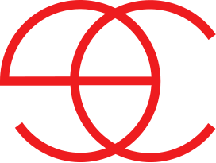

Услуги
Программы
Специалисты
Отзывы
Пресс-центр
Контакты
Москва, Кропоткинский переулок, д. 4, стр. 1
+7(495)1542144
европейский стандарт антивозрастной эстетической медицины
Expert clinics

великолепие за гранью времени